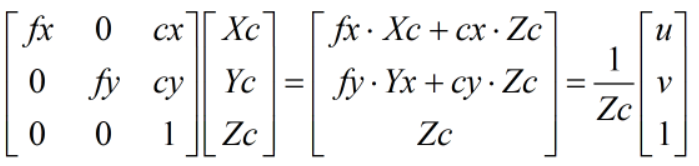
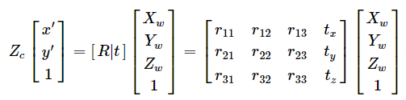
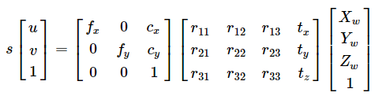
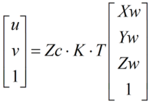
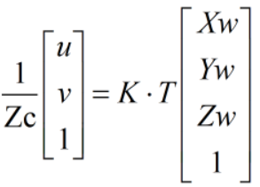

相机标定和单应矩阵
相机标定及单应矩阵
这两个问题从我刚开始学习这部分的知识一直到现在都感觉是一个似懂非懂的状态，今天又有了新的理解，记录一下吧
1.相机标定
相机的标定一般目的是求相机的内、外参数。相机的内参是唯一的，而外参的个数会随标定板的移动而变化。故如果输入N张图的话，最后将输出一个内参K和N个外参T。
1.1相机的内参K(3x3)
相机的内参的物理意义：由像素坐标系转换成相机坐标系的一个矩阵
- 注意，二维的像素坐标系的齐次形式要转成三维的相机坐标系，必须乘以个比例因子，也就是1/Zc
2.2相机的外参T(3x4)
就是[R|T]组成的矩阵
2.单应矩阵
在图像处理的坐标系转换问题中，经常会出现单应矩阵，它的作用就是一个坐标变换，将某点由像素坐标系下转换成其他坐标系(相机、世界……)
2.1像素坐标系到世界坐标系的单应矩阵（3x4）
首先看相机坐标系到世界坐标系的变换
因此，像素坐标系到世界坐标系为
 其中s=1/Zc
上式可以看成
（1）
 那么此时单应矩阵H=Zc * K * T 不是一个固定值，所以求出的H根本用不了，故求3x4的H不能用这种方法。
（2）
此时单应矩阵H=K * T是一个固定值，可以通过“已知几组点的像素坐标+深度和他们对应的世界坐标来列方程+RANSAC的方式”求解出H，但是，用这种方式具体使用时，必须知道深度信息Zc，所以要使用3x4的单应矩阵时，必须使用深度摄像机
2.2像素坐标系到世界坐标系中某平面的单应矩阵H(3x3)
设Zw为0，则此时求单应矩阵H就不需要相机的深度Zc了（后续补推导）
此时这个单应矩阵可以直接通过“已知几组点的像素坐标 和 他们对应的世界坐标（X,Y）来列方程+RANSAC的方式”求解出H
3.机械臂手眼标定
手眼标定是为了求出相机坐标系 到 机器人基座坐标系的变换矩阵，而不是 像素坐标系 到 机器人基座坐标系的变换矩阵
All articles on this blog are licensed under CC BY-NC-SA 4.0 unless otherwise stated.